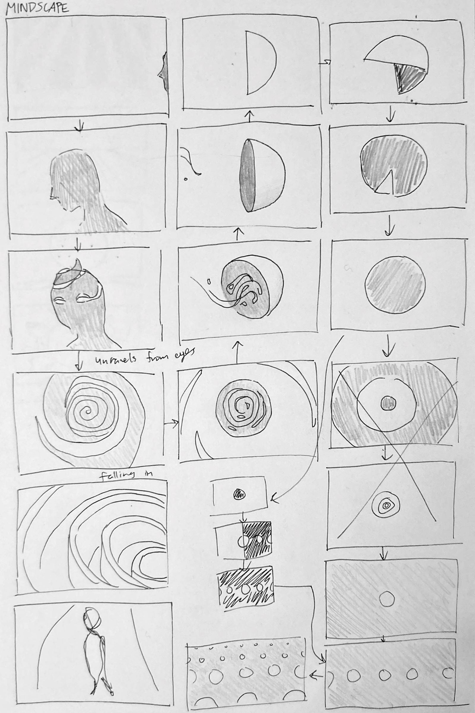
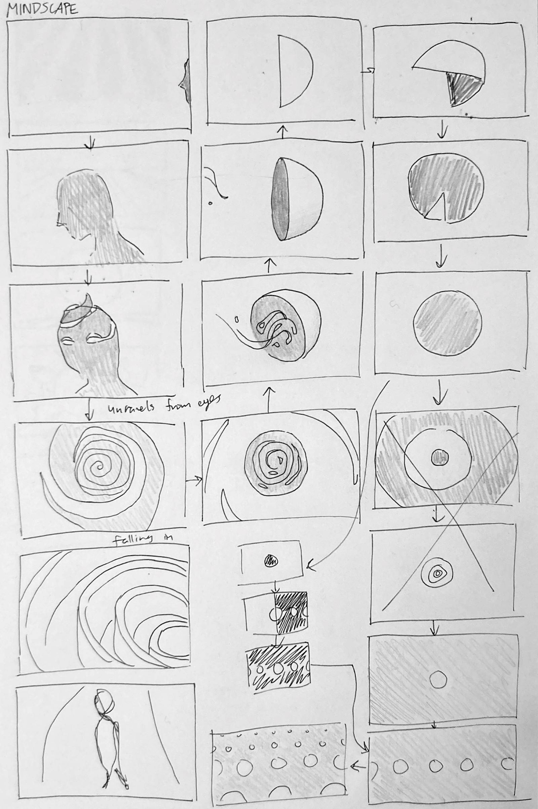
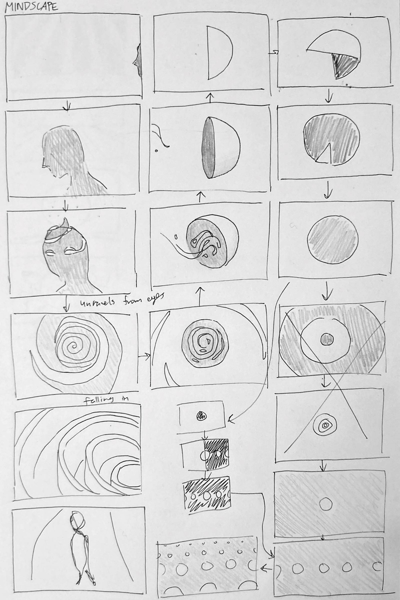

In this animation, I explored circles and loops in an abstract, mindscape-like context. I used flowing and circular imagery throughout the entire film, playing around with ideas like unravelling, rippling, flipping, zooming, collecting, melting. Anything I could do to circles, I tried it.
↑

The soundtrack was also carefully composed to align with the concept. The main chord progression repeats, gradually becoming more complex and experimental as the visuals similarly evolve. But the soundtrack does not come to an end. Rather, the last note feels like it should lead somewhere, leaving the viewer hanging in suspense.
But why? Because the entire animation is a perfect loop. (Get it?)
Interested in working together?
Send an email to lena@cordeliart.com!